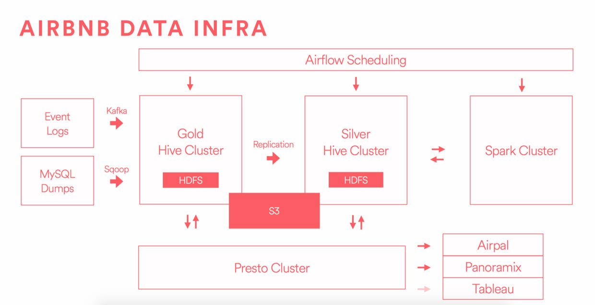

Data Infrastructure at Airbnb
[原文链接](https://medium.com/airbnb-engineering/data-infrastructure-at-airbnb-8adfb34f169c#.enuzhz135)
Part 1: Philosophy Behind our Data Infrastructure
里面有点很有趣。机器资源上预留些空间出来，这样可以尝试一些新业务。而这些业务的profit可以offset预留机器资源的cost.
> Leave some headroom: we oversubscribe resources to our clusters in order to foster a culture of unbounded exploration. It is easy for infrastructure teams to get wrapped up in the excitement of maximizing resources too early, but our hypothesis is that a single new business opportunity found in the warehouse will more than offset those extra machines.
Part 2: Infrastructure Overview

gold存储原始数据，然后在silver上做各种加工等
> Gold is our source of truth and we copy each bit of data from Gold down to Silver. Data generated on the Silver cluster is not copied back to Gold, and so you can think of this as a one way replication scheme that leaves Silver cluster as a superset of everything.
Part 3: Detailed Look at Our Hadoop Cluster Evolution
- hdfs在ec2上部署要考虑跨地域和跨机房问题
- hdfs federation还存在一些问题，所以部署多个hdfs clusters.
- 根据workload选择好ec2 instance type.
- 购买cloudera服务更好地使用hadoop.